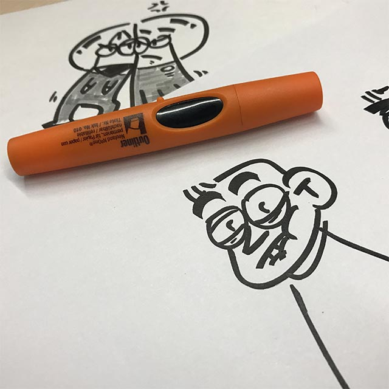
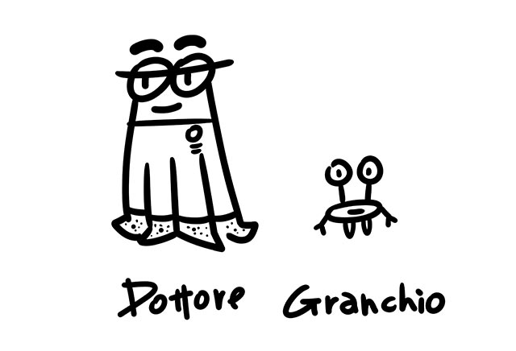
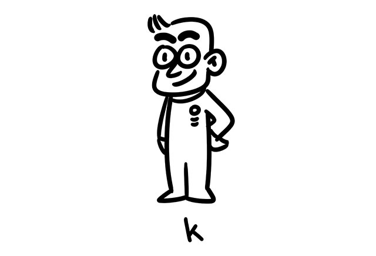
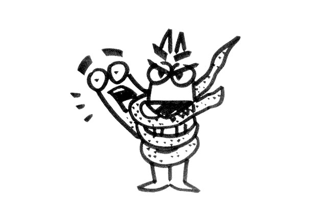
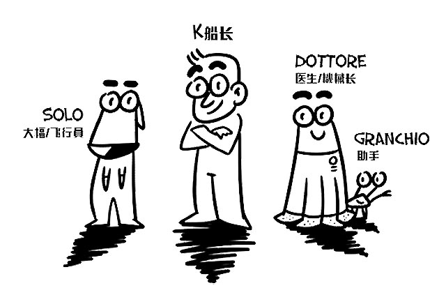

故事介绍&登场卡司
谢晓聪/剧本/2016-10-15
故事背景
200年后科技高度发达，人类开始向动物伸出橄榄枝—— 通过一系列的研究与试验，可以让动物 开始有意识的与人类进行交流并合作， 人类很看重不同物种它们天生的优势，这时，一支小而精明的太空舰队组成了...
这是Solo，没错他是一只会开飞船的狗，做事很讲究；因为成员结构问题… 他暂时兼任大幅&飞行员。

这是一对来自意大利的搭档，Dottore章鱼是一名出色医生同时也是名技工，负责飞船的修理，旁边那位Granchio是他得力的助手，为人耿直，少言语，一旦命令下达总能快速完成修理工作，并且只会说意大利语（和其他成员多少有沟通障碍）。

最后是我们的船长—K，他是个平常非常不按常理出牌但往往在关键时候总能力网狂澜的这么一个家伙…

solo和dottore总是意见不合；solo话少，自大；dottore意大利话痨，技术比较扎实。

于是，这个小而精明的团队，就这样踏上了茫茫宇宙之中...